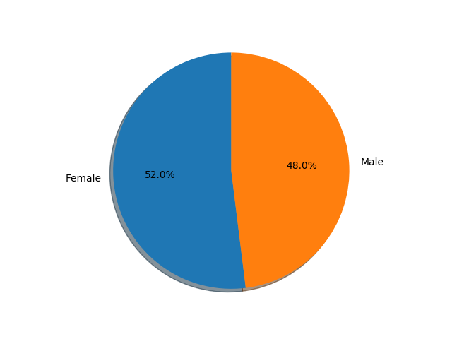
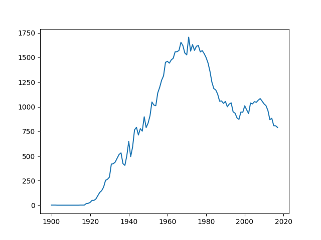
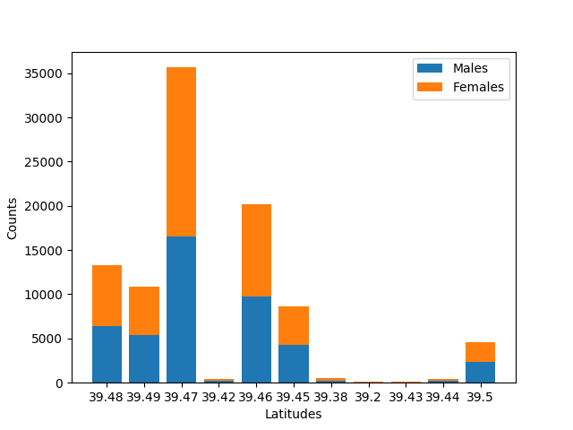
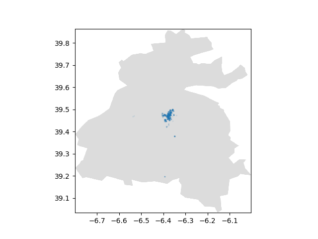
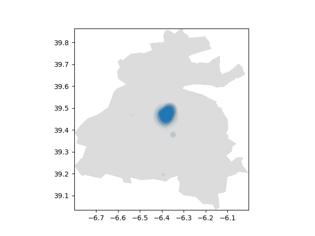

The city of Cáceres has online services to provide Open Data over a wide range of categories, all of which are very interesting to explore!
Modified 2020-03-19
We have chosen two different datasets, and will explore four different ways to visualize the data.
This post is co-authored with Classmate.
¶Obtain the data
We are interested in the JSON format for the census in 2017 and those for the vias of the city. This way, we can explore the population and their location in interesting ways! You may follow those two links and select the JSON format under Resources to download it.
Why JSON? We will be using Python (3.7 or above) and matplotlib for quick iteration, and loading the data with Python’s json module will be trivial.
¶Implementation
¶Imports and constants
We are going to need a lot of things in this code, such as json to load the data, matplotlib to visualize it, and other data types and type hinting for use in the code.
We also want automatic download of the JSON files if they’re missing, so we add their URLs and download paths as constants.
import json
import re
import os
import sys
import urllib.request
import matplotlib.pyplot as plt
from dataclasses import dataclass
from collections import namedtuple
from datetime import date
from pathlib import Path
from typing import Optional
CENSUS_URL = 'http://opendata.caceres.es/GetData/GetData?dataset=om:InformacionCENSUS&year=2017&format=json'
VIAS_URL = 'http://opendata.caceres.es/GetData/GetData?dataset=om:Via&format=json'
CENSUS_JSON = Path('data/demografia/Padrón_Cáceres_2017.json')
VIAS_JSON = Path('data/via/Vías_Cáceres.json')
¶Data classes
Parse, don’t validate. By defining a clear data model, we will be able to tell at a glance what information we have available. It will also be typed, so we won’t be confused as to what is what! Python 3.7 introduces [dataclasses](https://docs.python.org/3/library/dataclasses.html), which are a wonderful feature to define… well, data classes concisely.
We also have a [namedtuple](https://docs.python.org/3/library/collections.html#collections.namedtuple) for points, because it’s extremely common to represent them as tuples.
Point = namedtuple('Point', 'long lat')
@dataclass
class Census:
year: int
via: int
count_per_year: dict
count_per_city: dict
count_per_gender: dict
count_per_nationality: dict
time_year: int
@dataclass
class Via:
name: str
kind: str
code: int
history: Optional[str]
old_name: Optional[str]
length: Optional[float]
start: Optional[Point]
middle: Optional[Point]
end: Optional[Point]
geometry: Optional[list]
¶Helper methods
We will have a little helper method to automatically download the JSON when missing. This is just for convenience, we could as well just download it manually. But it is fun to automate things.
def ensure_file(file, url):
if not file.is_file():
print('Downloading', file.name, 'because it was missing...', end='', flush=True, file=sys.stderr)
file.parent.mkdir(parents=True, exist_ok=True)
urllib.request.urlretrieve(url, file)
print(' Done.', file=sys.stderr)
¶Parsing the data
I will be honest, parsing Cáceres’ OpenData is a pain in the neck! The official descriptions are huge and not all that helpful. Maybe if one needs documentation for a specific field. But luckily for us, the names are pretty self-descriptive, and we can explore the data to get a feel for what we will find.
We define two methods, one to iterate over Census values, and another to iterate over Via values. Here’s where our friend [re](https://docs.python.org/3/library/re.html) comes in, and oh boy the format of the data…
For example, the year and via identifier are best extracted from the URI! The information is also available in the rdfs_label field, but that’s just a Spanish text! At least the URI will be more reliable… hopefully.
Birth date. They could have used a JSON list, but nah, that would’ve been too simple. Instead, you are given a string separated by semicolons. The values? They could have been dictionaries with names for «year» and «age», but nah! That would’ve been too simple! Instead, you are given strings that look like «2001 (7)», and that’s the year and the count.
The birth place? Sometimes it’s «City (Province) (Count)», but sometimes the province is missing. Gender? Semicolon-separated. And there are only two genders. I know a few people who would be upset just reading this, but it’s not my data, it’s theirs. Oh, and plenty of things are optional. That was a lot of AttributeError: 'NoneType' object has no attribute 'foo' to work through!
But as a reward, we have nicely typed data, and we no longer have to deal with this mess when trying to visualize it. For brevity, we will only be showing how to parse the census data, and not the data for the vias. This post is already long enough on its own.
def iter_census(file):
with file.open() as fd:
data = json.load(fd)
for row in data['results']['bindings']:
year, via = map(int, row['uri']['value'].split('/')[-1].split('-'))
count_per_year = {}
for item in row['schema_birthDate']['value'].split(';'):
y, c = map(int, re.match(r'(\d+) \((\d+)\)', item).groups())
count_per_year[y] = c
count_per_city = {}
for item in row['schema_birthPlace']['value'].split(';'):
match = re.match(r'([^(]+) \(([^)]+)\) \((\d+)\)', item)
if match:
l, _province, c = match.groups()
else:
l, c = re.match(r'([^(]+) \((\d+)\)', item).groups()
count_per_city[l] = int(c)
count_per_gender = {}
for item in row['foaf_gender']['value'].split(';'):
g, c = re.match(r'([^(]+) \((\d+)\)', item).groups()
count_per_gender[g] = int(c)
count_per_nationality = {}
for item in row['schema_nationality']['value'].split(';'):
match = re.match(r'([^(]+) \((\d+)\)', item)
if match:
g, c = match.groups()
else:
g, _alt_name, c = re.match(r'([^(]+) \(([^)]+)\) \((\d+)\)', item).groups()
count_per_nationality[g] = int(c)
time_year = int(row['time_year']['value'])
yield Census(
year=year,
via=via,
count_per_year=count_per_year,
count_per_city=count_per_city,
count_per_gender=count_per_gender,
count_per_nationality=count_per_nationality,
time_year=time_year,
)
¶Visualizing the data
Here comes the fun part! After parsing all the desired data from the mentioned JSON files, we plotted the data in four different graphics making use of Python’s matplotlib library. This powerful library helps with the creation of different visualizations in Python.
¶Visualizing the genders in a pie chart
After seeing that there are only two genders in the data of the census, we, displeased, started work in a chart for it. The pie chart was the best option since we wanted to show only the percentages of each gender. The result looks like this:

Pretty straight forward, isn’t it? To display this wonderful graphic, we used the following code:
def pie_chart(ax, data):
lists = sorted(data.items())
x, y = zip(*lists)
ax.pie(y, labels=x, autopct='%1.1f%%',
shadow=True, startangle=90)
ax.axis('equal') # Equal aspect ratio ensures that pie is drawn as a circle.
We pass the axis as the input parameter (later we will explain why) and the data collected from the JSON regarding the genders, which are in a dictionary with the key being the labels and the values the tally of each gender. We sort the data and with some unpacking magic we split it into two values: x being the labels and y the amount of each gender.
After that we plot the pie chart with the data and labels from y and x, we specify that we want the percentage with one decimal place with the autopct parameter, we enable shadows for the presentation, and specify the start angle at 90º.
¶Date tick labels
We wanted to know how many of the living people were born on each year, so we are making a date plot! In the census we have the year each person was born in, and using that information is an easy task after parsing the data (parsing was an important task of this work). The result looks as follows:

How did we do this? The following code was used:
def date_tick(ax, data):
lists = sorted(data.items())
x, y = zip(*lists)
x = [date(year, 1, 1) for year in x]
ax.plot(x, y)
Again, we pass in an axis and the data related with the year born, we sort it, split it into two lists, being the keys the years and the values the number per year. After that, we put the years in a date format for the plot to be more accurate. Finally, we plot the values into that wonderful graphic.
¶Stacked bar chart
We wanted to know if there was any relation between the latitudes and count per gender, so we developed the following code:
def stacked_bar_chart(ax, data):
labels = []
males = []
females = []
for latitude, genders in data.items():
labels.append(str(latitude))
males.append(genders['Male'])
females.append(genders['Female'])
ax.bar(labels, males, label='Males')
ax.bar(labels, females, bottom=males, label='Females')
ax.set_ylabel('Counts')
ax.set_xlabel('Latitudes')
ax.legend()
The key of the data dictionary is the latitude rounded to two decimals, and value is another dictionary, which is composed by the key that is the name of the gender and the value, the number of people per gender. So, in a single entry of the data dictionary we have the latitude and how many people per gender are in that latitude.
We iterate the dictionary to extract the different latitudes and people per gender (because we know only two genders are used, we hardcode it to two lists). Then we plot them putting the males and females lists at the bottom and set the labels of each axis. The result is the following:

¶Scatter plots
This last graphic was very tricky to get right. It’s incredibly hard to find the extent of a city online! We were getting confused because some of the points were way farther than the centre of Cáceres, and the city background is a bit stretched even if the coordinates appear correct. But in the end, we did a pretty good job on it.
def scatter_map(ax, data):
xs = []
ys = []
areas = []
for (long, lat), count in data.items():
xs.append(long)
ys.append(lat)
areas.append(count / 100)
if CACERES_MAP.is_file():
ax.imshow(plt.imread(str(CACERES_MAP)), extent=CACERES_EXTENT)
else:
print('Note:', CACERES_MAP, 'does not exist, not showing it', file=sys.stderr)
ax.scatter(xs, ys, areas, alpha=0.1)
This time, the keys in the data dictionary are points and the values are the total count of people in that point. We use a normal for loop to create the different lists. For the areas on how big the circles we are going to represent will be, we divide the count of people by some number, like 100, or otherwise they would be huge.
If the file of the map is present, we render it so that we can get a sense on where the points are, but if the file is missing we print a warning.
At last, we draw the scatter plot with some low alpha value (there’s a lot of overlapping points). The result is absolutely gorgeous. (For some definitions of gorgeous, anyway):

Just for fun, here’s what it looks like if we don’t divide the count by 100 and lower the opacity to 0.01:

That’s a big solid blob, and the opacity is only set to 0.01!
¶Drawing all the graphs in the same window
To draw all the graphs in the same window instead of getting four different windows we made use of the subplots function, like this:
fig, axes = plt.subplots(2, 2)
This will create a matrix of two by two of axes that we store in the axes variable (fitting name!). Following this code are the different calls to the methods commented before, where we access each individual axis and pass it to the methods to draw on:
pie_chart(axes[0, 0], genders)
date_tick(axes[0, 1], years)
stacked_bar_chart(axes[1, 0], latitudes)
scatter_map(axes[1, 1], positions)
Lastly, we plot the different graphics:
plt.show()
Wrapping everything together, here’s the result:

The numbers in some of the graphs are a bit crammed together, but we’ll blame that on matplotlib.
¶Closing words
Wow, that was a long journey! We hope that this post helped you pick some interest in data exploration, it’s such a fun world. We also offer the full download for the code below, because we know it’s quite a bit!
Which of the graphs was your favourite? I personally like the count per date, I think it’s nice to see the growth. Let us know in the comments below!
download removed